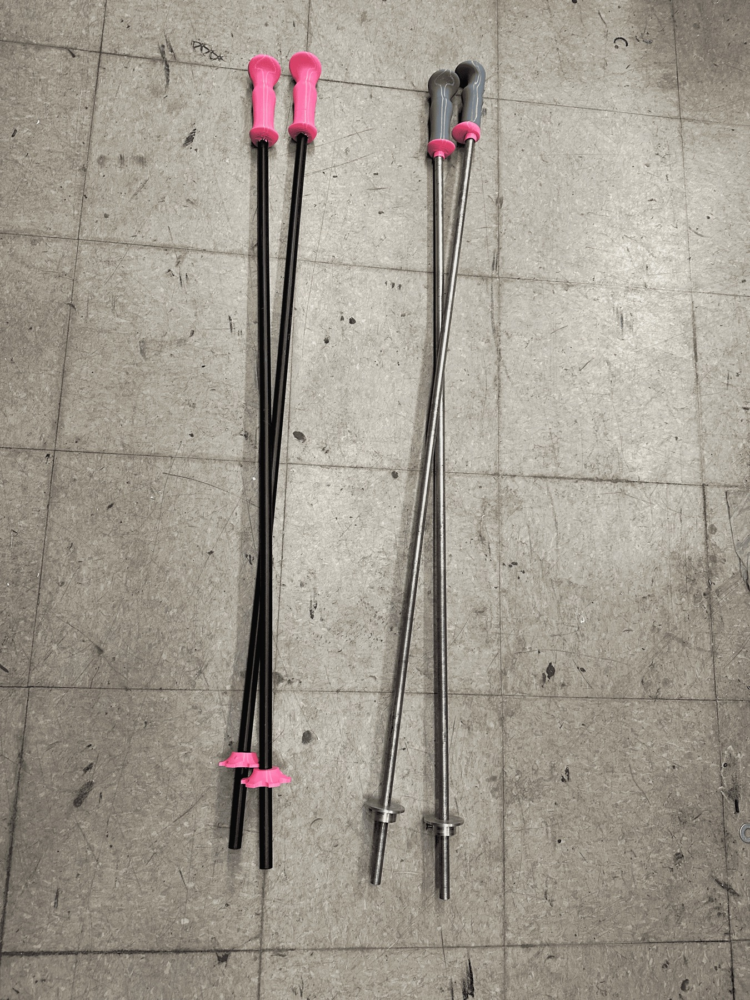
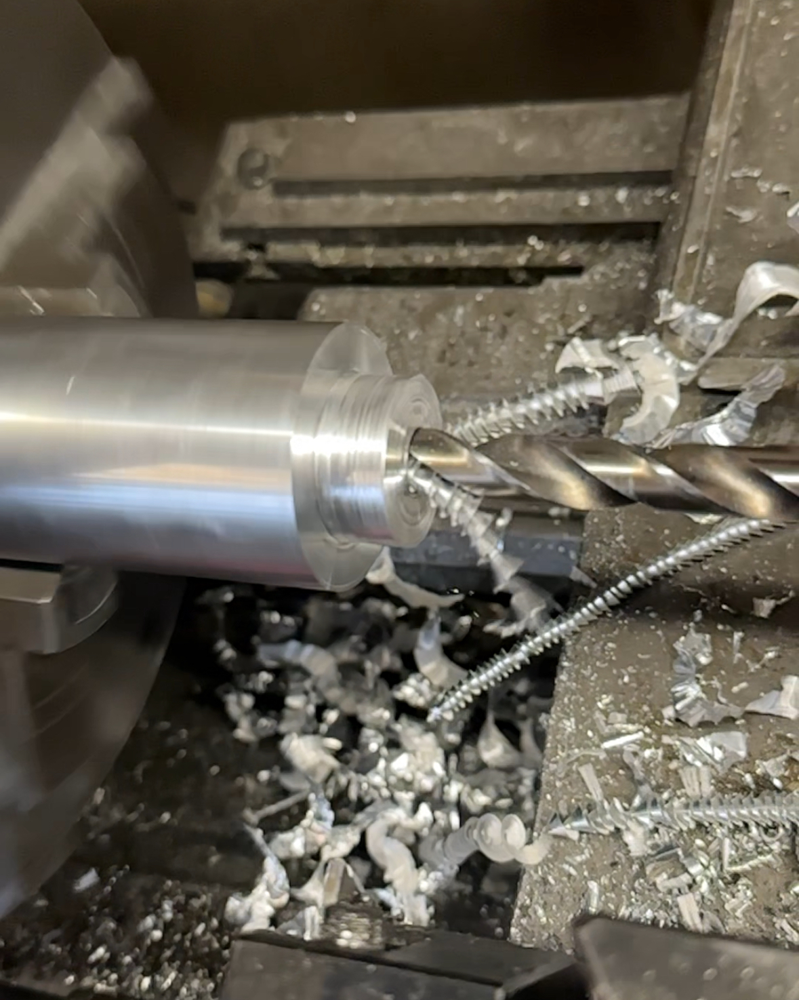

Custom Ski Poles
Building my own ultra-light and ultra sturdy ski pole pairs from scratch.

Background/Origin
My friends and I were getting ready to go skiing, but I didn’t have ski poles. After getting no responses on Facebook Marketplace—and not wanting to buy a new pair—I decided to make them myself!

Engineering Aluminum Ski Poles
To create the end stop, I turned two concentric cylinders on the lathe, leaving a slimmer cylinder on top. I then used the mill to drill a hole through the smaller section. By inserting an M4 screw through this hole, I created a joint rated to withstand over 400 kg — far more than sufficient to support my weight while skiing.

Engineering Carbon Fiber Ski Poles
To keep my carbon fiber ski poles as light as possible, I 3D printed the end stops and handles from TPU rather than using aluminum. I constrained the end stop with the same M4 hex screw as before, and secured the handle using an interference (press) fit that relies on friction to maintain a tight connection.
Final Notes / Next Steps
After using these poles on several ski days, I noticed that sharper tips would make them easier to plant and remove from the snow. On a few occasions, the poles became stuck when I used them to push myself forward. For my next iteration, I will add curvature similar to industrial ski poles to increase leverage and improve usability.